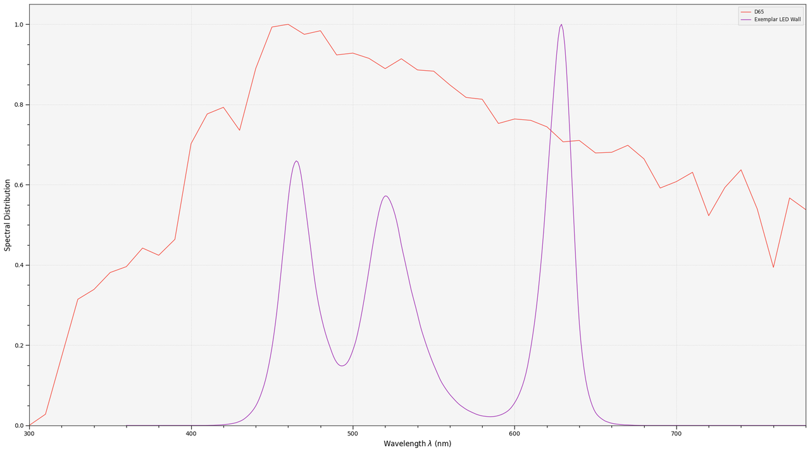
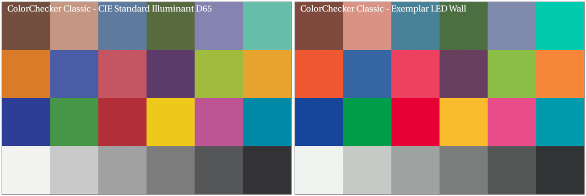
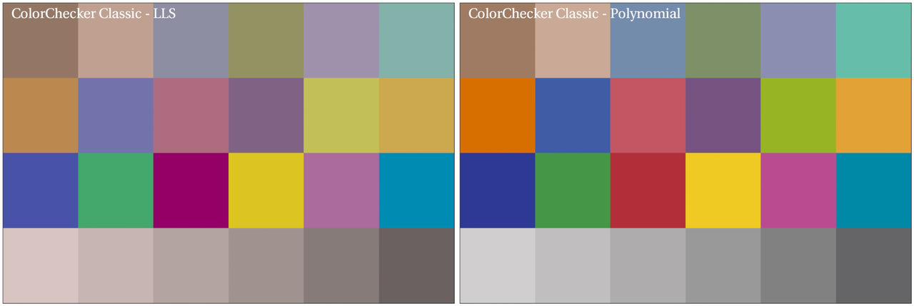

The ColorChecker Considered Mostly Harmless
This post will be about colour rendition charts, e.g. X-Rite ColorChecker Classic, their usage and its dangers. It was a long time coming and some discussions accelerated the authoring. If you are in a hurry and do not want to read the entire post, the TLDR is as follows:
Unless you have all the relevant spectral measurements, a colour rendition chart should not be used to perform colour-correction of camera imagery but only for white balancing and relative exposure adjustments.
There is granularity in everything, and we will present, in the conclusion, some contexts when performing colour-correction is a good idea.
We are also hoping that researchers having an understanding of colourimetry will be able to read through the lines. This post is not for them but for the photographers and colourists out there.
Postulate: Light Does Not Matter
There is an overabundance of Youtube videos explaining how to get perfect colours with the help of a colour rendition chart.
Yesterday, an Unreal Engine: Virtual Production Facebook group member linked one of them, claiming that this was the safest way to calibrate a camera for Virtual Production and also, quite oddly, that light does not matter.
Is a Colour Rendition Chart the Safest Way to Calibrate a Camera?
Simply put, this statement is not only incorrect but the worst way possible to calibrate a camera and should be avoided, unless you have all the relevant spectral measurements..
Using a colour rendition chart for colour-correction might dramatically increase error if the scene light source spectrum is different from the illuminant used to compute the colour rendition chart's reference values. The reference values are given (or calculated) for a particular illuminant. In the context of the Youtube's videos, the scene light source spectral power distribution is never measured and thus always unknown. In this context, other factors make using a colour rendition chart unsuitable for camera calibration:
Uncontrolled geometry of the colour rendition chart with the incident illumination and the camera.
Unknown sample reflectances and ageing as the colour of the samples vary with time.
Low samples count.
Camera noise and flare.
Etc...
Conceptually, such a colour-correction coerces the scene to appear as if it was lit by different lighting conditions.
More importantly, it damages the camera maker's characterisation work by replacing it with a potentially harmful shot dependent calibration. Camera makers, e.g. ARRI, RED or Sony, have intimate knowledge of their camera's spectral sensitivities and lenses' transmission. They have access to high-precision monochromators and spectro-radiometers.
Characterising a camera so that it produces faithful colours is a blend of science and art. The result of the characterisation process is typically a series of transformation matrices for various illuminants, commonly CIE Illuminant D55 and ISO 7589 Studio Tungsten. Often, the matrices have a 3x3 shape because the regression between the training dataset for the human observer and the camera test dataset uses Linear Least-Squares (LLS). 3x3 matrices are exposure invariant and extremely performant. nx3 matrices are rare and the result of polynomial regression, e.g. Finlayson et al. (2015) with the exposure invariant Root-Polynomial Expansion (RPE) method.
The careful distribution of the training dataset samples shapes the resulting transformation. The camera makers bias them to emphasise some colours, such as skin tones or foliage. The samples are chosen with a wide spectral variety to provide a sizeable spectral sensitivity. Standard colour rendition charts samples do not exhibit such variety. Furthermore, the low sample count is inappropriate for producing a complete gamut of natural reflectances.
The AMPAS Training Dataset, a collection of natural reflectances cherry-picked to exhibit good spectral sensitivity and coverage, is used to produce ACES Input Device Transforms (IDT).
The ColorChecker Classic does not have enough samples to be suitable for camera characterisation.
Proof by Light
Let's imagine a scene lit with narrow-band lighting such as a Virtual Production LED wall. To keep the process simple, we will discard the camera, spectral sensitivities and white balancing concerns and only work in the Standard Observer domain.
Given the spectral distributions of the CIE Standard Illuminant D65 and an exemplar LED wall, a rendered ColorChecker Classic would look as follows under both illumination sources:
The ColorChecker Classic illuminated by the LED wall and corrected with the LLS and the RPE methods is as follows:
It was the ideal scenario, using the same observer for the scene, and yet it was not successful. In reality, with a camera, it is more challenging because it is optimised for natural reflectances, sacrificing precision for the most narrow-band stimuli. It is typical for narrow-band emitters to produce final colours that are outside the spectral locus. The AMPAS had a Virtual Working Group working on that specific problem for over a year.
Conclusion
Please do not use a colour rendition chart naively. It is not a silver bullet and it might create more problems than it solves.
Those issues are well understood in the VFX industry, and when receiving plates, we almost exclusively use colour rendition charts to white balance and perform relative exposure adjustments, i.e. plate neutralisation.
Another technical aspect that was not discussed is that an nx3 matrix introduces channel cross-correlation because it scales and rotates the colour space. This cross-correlation produces unwanted side effects, e.g. out-of-gamut colours, when VFX work has been layered on top of the plate and neutralisation is reverted for final delivery.
We use colour rendition charts daily but responsibly, with knowledge of their strengths and shortcomings.
Then, when is it a good idea to use one for colour-correction? When working with a camera that does not have a proper input transformation, e.g. machine vision camera or an old camera, and that you do not have access to hardware to measure the camera sensitivities, then a colour rendition chart such as the X-Rite ColorChecker Digital SG with known reflectances and a quality illumination source with known spectral irradiance might save the day. Similarly, it can be useful to help to narrow down differences between some cameras under controlled lighting conditions.
Further reading is available in Procedure P-2013-01: Recommended Procedures for the Creation and Use of Digital Camera System Input Device Transforms (IDTs).
Comments
Comments powered by Disqus